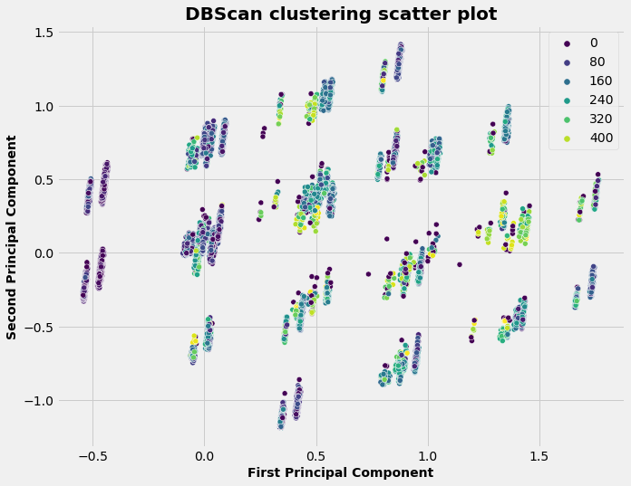
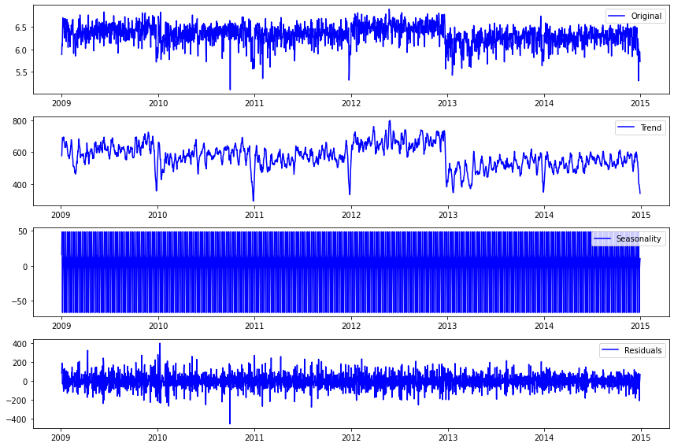
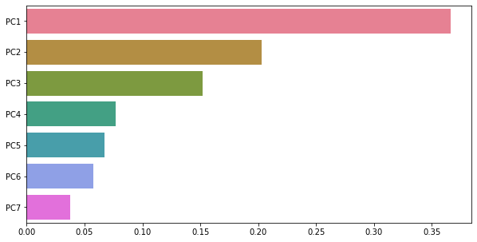
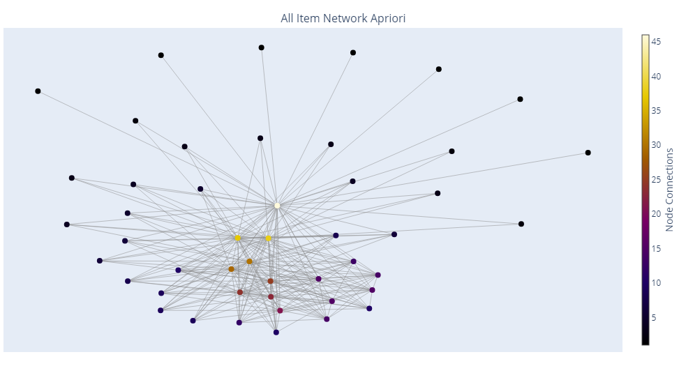

Highly motivated and hardworking Data Analyst with over 5 years experience in the Smart City and M&E projects.
Skilled in working with Python/Matlab/SQL, with the ability to apply machine-learning models.
Experienced in developing technical documentations, visualizations dashboards in Tableau/Power BI, and providing data insight and impact to drive strategic decision-making.
Proven ability to meet tight deadlines and deliver quality results under pressure.
Looking to leverage my expertise in data analysis and machine learning to contribute to innovative projects in a dynamic and fast-paced environment.
Connect with me on LinkedIn for collaboration and updates on industry advancements.

UK road accident data analysis 2009 - 2014.
Principal Component Analysis, K-means vs DBScan, comparing methods.

UK road accident data analysis 2009 - 2014.
Data Preparation, Data Cleaning, Checking for stationarity
Auto ARIMA model, Exponential Smoothing, Holt-Winters Exponential Smoothing.

PCA dimensionality reduction method allows us to choose the number of components we need to use based in the highest variance.
Apart from PCA in LDA we can't control the number of components, it's always reduced by one from number of classes we have represented as a target variable.
However, LDA is a better to use for solving classification problems as it creates a clear separation between classes.

Understanding product associations and optimising sales strategies, guiding businesses towards increased revenue.
This can assist retailers to determine product placement and promotion optimization (for instance, combining product incentives).